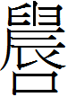
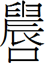

䷲ 震卦 (震為雷)
震，亨。震來虩虩，笑言啞啞，震驚百里，不喪匕鬯。初九，震來虩虩，後笑言啞啞，吉。六二，震來厲，億喪貝，躋于九陵。勿逐，七日得。六三，震蘇蘇，震行无眚。九四，震遂泥。六五，震往來厲，億无喪，有事。上六，震索索，視矍矍，征凶。震不于其躬于其鄰，无咎。婚媾有言。
|
象曰：洊雷震，君子以恐懼脩省。（圖：小配） |
【卦名】
今本：震 歸藏：釐 帛書：辰 清華簡：徠/ / 海昏簡：侲/晨
/ 海昏簡：侲/晨
雷霆，振奮、震驚、驚動、當頭棒喝。
《說文》：「震，劈歴，振物者，从雨辰聲。《春秋傳》曰：震夷伯之廟。」段注：「劈歷，疾雷之名。《釋天》曰：疾靁為霆。《倉頡篇》曰：霆，霹靂也。然則古謂之霆，許謂之震。」依《說文》，震即霹靂，疾雷也。這也符合傳統震為雷的取象。
甲骨文震與䟴同源，都作，卜辭中為震驚、震動之義。即《說文》說的：「䟴，動也。」但震字後來又作為霹靂，也是疾雷的意思，《說卦傳》說的「震為雷」，雷震則萬物驚醒，因此《說文》說是「振物者」。
《雜卦傳》：「震，起也。」《序卦傳》：「震者動也。」《說卦傳》：「震，動也。」都是以動解釋震（䟴）。《彖傳》對於卦辭的註解則多了驚、恐的意義：「震來虩虩，恐致福也；笑言啞啞，後有則也；震驚百里，驚遠而懼邇也。」
帛書作辰，可通䟴或震。辰在甲骨文卜辭中為地支之一，也作震動之義。現今辰字取「時辰」義，如良辰美景。《說文》：「辰，震也。三月陽气動，靁電振，民農時也，物皆生。」段注：「震振古通用。振，奮也。《律書》曰：辰者言萬物之蜄也。《律曆志》曰：振美於辰。《釋名》曰：辰，伸也，物皆伸舒而出也。季春之月，生氣方盛，陽氣發泄，句者畢出，萌者盡達。二月靁發聲，始電至。三月而大振動。」依《說文》，辰通震，段注則指出，古震與振通，辰即震，也是振奮的意思。
清華簡〈卦位圖〉作 或  ，兩字像是「農」或「晨」的繁化異體，清華簡的文獻整理者則認為是「震」字。差別在本字之下或加一口或加日字。〈卦位圖〉說：「 司靁，是古胃之 。」（震司雷，是故謂之震。）靁同雷，這與現今將震取象為雷是一致的。
，兩字像是「農」或「晨」的繁化異體，清華簡的文獻整理者則認為是「震」字。差別在本字之下或加一口或加日字。〈卦位圖〉說：「 司靁，是古胃之 。」（震司雷，是故謂之震。）靁同雷，這與現今將震取象為雷是一致的。
海昏簡《易占》中的八純卦多數與八卦卦名同，例如乾卦說「屯建〃者建也」（純乾，乾者建也），離卦「屯麗〃者麗也」（純離，離者麗也），艮卦「屯根〃者止也」（純艮，艮者止也），巽卦「屯巽。屯巽者孫也」，兌卦「屯說〃者說也」（純兌，兌者說也），川（坤）與臽（坎）重卦卦名簡文從缺。唯獨震卦八卦與純卦卦名不同，震卦的八卦卦名作晨，重卦的震則作侲，並解釋為「恐懼」：「屯晨。侲者恐懼也。」侲音震，《說文》：「僮子也。」「恐懼」之義則與經文及《彖傳》釋義相同，但不同於其他易傳。震卦卦辭「震來虩虩」，虩虩即恐懼貌。《彖傳》：「震來虩虩，恐致福也。」《爾雅》：「戰，慄，震，驚，戁，竦，恐，慴，懼也。」
來釐
清華簡〈四季吉凶〉作上來下止，通徠、逨，可視為來的繁化。來原本是一種代表祥瑞的麥子，為上天所賜福而來。《歸藏》作釐，釐的古字作，其甲骨文 為用手擊麥祈福。來與釐古都為來聲，因此亦可通假。來是古代的瑞麥，而釐則是以瑞麥祈求福氣之來臨，因此《說文》說：「釐家福也。」這也是《彖傳》「恐致福也」之義。而卦爻辭說的「震來」講的很可能是古代祈福儀式，「震來」就是拍打「來」（瑞麥）以求福，虩虩、蘇蘇、索索，可能都是拍打麥子的狀聲辭，因不同的聲音，而有不同的預測。
《周易》經文中亦可見震為來的取象，如復卦坤為朋，震為來，卦辭言「朋來无咎」。震卦下震為來，故卦辭言震來虩虩。
【卦義】
震卦上下都是震，卦義直接從三畫卦的震卦而來。震為雷霆，引申為變動、震動、震驚，驚動之義，亦有當頭棒喝、驚醒、驚恐而覺醒的意思，《彖傳》說的「恐致福」。
三畫卦的震卦因一個陽爻動於初，因此其德性為動。於人倫則代表長子，因震卦一索而得男。因此若是問胎生，那麼就是生男。
卦序上震卦是繼鼎卦而來，鼎除了是古時用以烹飪食物的器具之外，更是代表國家權力的神器，而長子則是執掌器物者，所以《序卦》說：「革物者莫若鼎，故受之以鼎。主器者莫若長子，故受之以震。」因此若若問權位，現時雖無法獲得實權，但可能將當儲君，或現代企業常說的「儲備幹部」。
雷霆之來，往往讓人心生恐懼，而人生變動的來臨亦然。但雷之發聲，驚醒萬物；人若能因變動而能有所警覺、自省，而後則能夠亨通。
《彖傳》說「恐致福也」，恐懼可召來福氣。王弼說：「震者驚駭怠惰以肅解慢者也。」意思是說，震是要用以驚醒怠慢、怠惰的人心。因此震可說是一個先驚後喜之卦。若能夠因為變動而震驚、恐懼，因此有所警覺與震奮，那麼反而在最後能夠得到亨通，而為吉。
震卦以初九為震動之主爻，因此爻辭與卦辭同，曰「震來虩虩，後笑言啞啞」。六爻以能驚懼兢畏為吉。六二柔下而中正自守，雖喪貝，但七日可復得。六三居互體坎下，曰无眚。九四雖為外卦震主，但陷於互體坎中，坎為泥，故曰震遂泥。六五柔中，居互體坎上，能轉危為安，曰无喪而有事。上六居震極，雷霆及於其鄰而無咎。
六爻安排略呈上下對應：初九為震驚百里，九四為震遂泥；六二曰震來厲，億喪貝；六五曰震往來厲，億无喪。六三曰震蘇蘇，震行无眚；上六曰震索索，征凶。
震亨，震來虩虩，笑言啞啞。震驚百里，不喪匕鬯。
《彖》曰：震，亨。震來虩虩，恐致福也；笑言啞啞，後有則也；震驚百里，驚遠而懼邇也，出可以守宗廟社稷，以為祭主也。
《象》曰：洊雷震，君子以恐懼脩省。
震動而亨通。雷霆之來，讓人驚恐害怕，但後來笑顏逐開。雷霆驚動百里之遠，祭祀的匕匙和香酒等祭器不會喪失。
先震驚，後亨通。先恐懼，後喜樂。有所恐懼則吉，權力可保，不會受到威脅。《彖傳》「恐致福也」，恐懼反而可以招來福氣，反之若不恐懼則恐怕有凶災。
卦辭的震應有不同的解釋，首震為震動之義。「震來」的震，為雷霆，亦可比喻事情的變動。第三個震也是雷霆，但又有喻指諸侯國君之言行動作。
「震來」除了可依傳統解釋為變動或雷霆來臨之外，或可解釋為拍打瑞麥以祈福。「來」原義為瑞麥，「震」通振，拍打。拍打瑞麥為古代的祈福儀式，也是「釐」字的形構，歸藏震卦作釐，可為證。「虩虩」則為拍打瑞麥時的聲音。上古拍打瑞麥祈福或以聲音與震動的大小來判斷吉凶，震動越激烈聲音越大而有力，越是吉，反之為凶。卦辭與初九的「隙隙」為聲音最大者，因此為吉，眾人歡笑。而六三「震蘇蘇」為聲音不夠大，震動不夠強，所以只為「無眚」。上六「震索索」則是聲音稀疏，疲軟乏力，為凶象，故曰征凶。
帛書作「辰，亨。辰來朔朔，芺言亞亞。辰敬百里，不亡觴」。
鄭玄：雷發聲聞于百里，古者諸侯之象。諸侯出教令，能警戒其國。內則守其宗廟社稷，為之祭主，不亡匕與鬯也。人君於祭之禮，匕牲體薦鬯而已，其餘不親也。升牢於俎，君匕之，臣載之。鬯，秬酒，芬芳修鬯，因名焉。
【字義】
震來：1. 雷霆之來。震為雷霆。 2. 傳統解釋，震為變動，震來則是變動之來，如朱熹：「震，動也。一陽始生於二陰之下，震而動也。其象為雷，其屬為長子。震有亨道，震來，當震之來時也。」《日講易經解義》：「當變動之時，而能恐懼脩省，則可致福而遠害，故曰亨。」 3. 震來亦可能指的是拍打瑞麥。震為拍打，來為瑞麥。《說文》：「來，周所受瑞麥來麰。一來二縫，象芒朿之形，天所來也，故為行來之來。《詩》曰：詒我來麰。凡來之屬皆从來。」「來」甲金文作 ，為麥的本字，但被借為往來、來去的來。麥字形構為來字下加一夊（反足），以象來往之來。《清華簡》〈四季吉凶〉震卦卦名作上來下止，與今文的徠、逨，皆可視為麥字的異體，造字本義皆取來往之來義。但之後的文字發展，仍以「來」為來去之來，「麥」卻變成了稻麥的麥，為作物之名，兩字取義完全相反了。
虩虩：虩音細。虩虩，恐懼貌。馬融、鄭玄：「虩虩，恐懼貌。」虞翻：「四失位多懼，故虩虩。」《說文》：「《易》：履虎尾虩虩，恐懼。一曰蠅虎也。」《說文》所引為履卦九四爻辭，今本作「履虎尾愬愬」，震卦「虩虩」荀爽作「愬愬」。「虩虩」與「愬愬」為通假字，但應以「虩虩」為正，因虩字較古。《說文》另外提出，虩為蠅虎之說，後來易學家以蠅虎為一種蜘蛛，現今用語亦以蠅虎為蜘蛛，生物學上屬於蜘蛛目蠅虎科。陸希聲：「虩，蠅虎，始在穴中，跳躍而出，象人心之恐動也。」然而，個人竊疑，蠅虎（虩）為一種壁虎，而虩虩為狀聲辭，像壁虎叫聲，此處則形容恐懼害怕而驚呼，或者為拍打麥子的聲音。來知德：「虩本壁虎之名，以其善于捕蠅，故曰蠅虎。因捕蠅常周環于壁間，不自安寧而驚顧，此用虩字之意。」俞琰虩虩以為狀聲辭：「虩虩，與蘇蘇、索索皆雷聲。震來虩虩，謂雷之初來而其聲震動也。」
啞啞：啞，音厄。啞啞，談笑、歡樂的樣子。《說文》：「啞，笑也，从口亞聲。《易》曰：笑言啞啞。」虞翻：「啞啞，笑且言。」鄭玄：「啞啞，樂也。」笑言啞啞也可解釋為拍打瑞麥祈福過程中的歡樂景象。
震驚百里：古代諸侯封地約略百里，大型諸侯國如魯國、衛國，可能達三、四百里，小型者為幾十里。因此震驚百里喻指古代諸侯之言行，影響及於百里。所以鄭玄說：「雷發聲聞于百里，古者諸侯之象。諸侯出教令，能警戒其國。」震為諸侯，如屯卦與豫卦之「利建侯」，皆取此象。
不喪匕鬯：不喪失祭祀的器具。震為長子，長子為主器承業者，不喪匕鬯意味不失其身份或地位或權勢，有權位穩定的意思。匕鬯，灌禮祭祀用的器具。匕音比，用來將鼎中烹煮好的食物取出來的工具，類似於現在我們使用的大湯匙，在考古發現中，匕多與鼎在一起。此為澆灌香酒之用。鬯音唱，香酒，祭祀時用以灌地請神。王弼：「匕，所以載鼎實；鬯，香酒，奉宗廟之盛也。」鄭玄：「人君於祭之禮，匕牲體薦鬯而已，其餘不親也。升牢於俎，君匕之，臣載之。鬯，秬酒，芬芳修鬯，因名焉。」朱熹：「匕，所以舉鼎實。鬯，以秬黍酒和鬱金，所以灌地降神者也。」
初九，震來虩虩，後笑言啞啞，吉。
《象》曰：震來虩虩，恐致福也；笑言啞啞，後有則也。
雷霆之來讓人害怕驚呼，但後來能夠笑顏逐開，吉。
也可解釋為拍打瑞麥祈福而虩虩作響，大家一片歡笑，吉。
初九與震卦卦辭同，因初九為震卦的震動之主，震卦之卦義亦由此而來。
九四雖是上卦震之卦主，但居互體坎中，為陷於泥淖之象。其次，震之動，有初始創制之義，相較之下，初九較符合此義。
六二，震來厲，億喪貝，躋于九陵。勿逐，七日得。
《象》曰：震來厲，乘剛也。
雷霆來得相當凶猛，讓人想起喪失的貝殼，登上高陵。失去的不必追逐，七日就可復得。
傳統以震來為震動之來。震動帶來了危險，喪失了許多的財物。登上高陵，所失去的不必去追逐，七日就可復得。
震來或為拍打瑞麥，震來厲為拍得麥子非常凶猛，或因拍打瑞麥而有危險。
六二以柔乘初九之剛，初九為震動之主，其勢不可擋，因此六二首當其衝而有危險。六二爻動下體成兌為損失，但互體成離為得，因此有失而復得之象。
七日可指七日，但易經中經常是指一個周期，如復卦就有「七日來復」，既濟六二「婦喪其茀，勿逐，七日得」。
【字義】
厲：危險、危厲，亦有凶猛、猛烈之義，如雷厲風行。《爾雅》：厲，搖、動、作也。
億喪貝：貝為古代的貨物，即今之錢財。億喪貝，因為「億」的解釋而有不同的意思。至於何者才是正解，朱熹說：「億字未詳。」 1. 億通噫，驚恐而失聲之貌，或為語助辭。《釋文》：「億，本又作噫，同，於其反，辭也。」虞翻：「億，惜辭也。」王弼：「億，辭也。貝，資貨，糧用之屬也。」 2. 臆也，臆測，臆度，猜測可能……。如《論語》「億則屢中」。臆喪貝，猜測可能遺失了貝殼。程頤：「億，度也。」 3. 大，億為數之大者，因此解釋作大。鄭玄：「十萬，億。」震六五「億无喪」《象》曰「大无喪也」，即是以「億」為「大」。億喪貝，即喪失很多的錢財。 4. 《說文》：「億，安也。」億喪貝，安而喪貝。 5. 帛書作「意亡貝」，意可假借為億，為意志、意思之義。亦可解釋為疑，義近於臆。或作憶，想到。憶喪貝，想到丟失的貝殼。
躋于九陵：登上高地。互體成艮，故有登高之象。躋，升，登。九陵，高陵。程頤：「九陵，陵之高也。」同人九三「升其高陵」，漸九五「鴻漸于陵」。王弼將陵解釋為危險：「无糧而走，雖復超越陵險，必困于窮匱，不過七日，故曰勿逐，七日得也。」《詩經．鶴鳴》「鶴鳴于九皐，聲聞于野」，鄭箋：「數至九，喻深遠也。」《韓詩》：「九皐，九折之澤。」
六三，震蘇蘇，震行无眚。
《象》曰：震蘇蘇，位不當也。
雷停了又來，不斷反覆，有如變動一波未平一波又起。振作前往，不會有災禍。
三是多凶之位，雷霆與變動之來，原本就讓人相當驚恐，更何況一直反覆不斷地出現。六三處下震之極，再往前則是外卦上震，因此居於兩震之間，故曰「震蘇蘇」，意謂雷與變動反覆再三的來。
震蘇蘇，或意指拍打瑞麥聲音為蘇蘇聲而沒有力氣。故以震行戒之，若能振作一些則可免於災眚。
【字義】
蘇蘇：有多種解釋。1. 通甦，復蘇、死而復生。以「蘇」為死而復生，則「震蘇蘇」為震停歇之後又再起，反覆再起，為震蘇蘇，也就是天上的雷反覆一直再停再起。虞翻：「死而復生，稱蘇。三死坤中，動出得正，震為生，故蘇蘇。｣ 2. 失神、渙散，不安的樣子。鄭玄：「蘇蘇，不安也。王弼：「不當其位，位非所處，故懼蘇蘇也。」孔穎達：「蘇蘇，畏懼不安之貌。」程頤和朱熹：「緩散自失之狀。」 3. 舒緩的樣子。俞琰：「蘇，舒緩也。震至六三則雷聲舒緩而少息也。」精確來說，俞琰是以蘇蘇為狀聲辭，而蘇蘇聲意指雷聲疏緩，卦辭註：「虩虩，與蘇蘇索索皆雷聲。震來虩虩，謂雷之初來而其聲震動也。」 4. 王肅：「蘇蘇，躁動貌。」 5. 馬融：「蘇蘇，尸祿素餐貌。」 6. 狀聲辭，拍打瑞麥呈蘇蘇聲。 7. 帛書作「辰疏疏」，疏疏為稀少疏落狀。
眚：音省，災禍。
九四，震遂泥。
《象》曰：震遂泥，未光也。
雷擊打入泥中。
傳統註解為：震動陷於泥濘之中。
《象》曰：「震遂泥，未光也。」事情無法光大，志向無法伸展。
九四以剛居柔不當位，又為六五的陰爻所駕乘，上卦震主坎陷之象（互體成坎）。無法震奮，有憂鬱之象。坎為泥，故震遂泥。
【字義】
震遂泥：遂，進、入，至。遂或作隊，《釋文》：「荀本遂作隊。」隊本義為墜落，《說文》：「從高隊也。」段玉裁：「隊墜正俗字，古書多用隊，今則墜行而隊廢矣。」震墜泥，雷霆墜入泥中。傳統註解震取震動義，震遂泥為震動而陷入泥淖。程頤：「陷溺於重陰之間，不能自震奮者也，故云遂泥。泥，滯溺也。」朱熹：「以剛處柔，不中不正，陷於二陰之間，不能自震也。遂者，无反之意。泥，滯溺也。」
六五，震往來厲，億无喪有事。
《象》曰：震往來厲，危行也。其事在中，大无喪也。
往外震動而引來危險，若能大有為則不會有所損失於祭祀之事。
傳統註解為震動而往來皆危厲，六五以柔乘九四之剛，九四又是上震卦的卦主，因此和六二一樣有危險。但因五為君位，又有中庸之德，因此而億無喪。
【字義】
震往來厲：三種讀法。一是「往來厲」連讀，如虞翻：「往謂乘陽，來謂應陰；失位乘剛，故往來厲也。」程頤：「是往來皆危也。」傳統多採用此讀法。其次是「震往來」連讀，王弼：「往則无應，來則乘剛，恐而往來，不免於危。」或可分讀為「震往，來厲」，震動而往則來厲。
震往：初爻及二爻皆曰「震來」，因初與二都在內，故曰「來」。九四爻在外，故曰「往」。九四為外震之主，又近六五之君位，有進逼之象，九四近逼六五為由內往外，故曰「震往」。
來厲：與六二同，六五以柔乘九四之剛，且九四為外震之主，因此曰「厲」。來厲者，因六五在九四之外，由外而內，以柔乘剛，故曰「來厲」。
往來厲：有兩種解釋：1. 震動則往來都是危險。厲，危也。蘇東坡：「往來厲，往來皆危，則以處為安矣。」程頤：「五之動，上往則柔不可居動之極，下來則犯剛，是往來皆危也。」熊良輔：「震往亦厲，來亦厲，皆以危懼待之，故能无喪有事。」 2. 往來為進退失據之狀。王弼：「恐而往來，不免於咎。」孔穎達：「懼以往來，將喪其事。」
億无喪：億與六二「億喪貝」的億同，諸家說法也都承襲各自在六二爻的解釋。但六五《象傳》說：「其事在中，大无喪也。」可見「億无喪」即「大無喪」。理應有喪，但若能夠「大」則可得而無喪。億，指數字的億，引申為大。大為贊嘆之辭，意指奮發有為。六五爻動上體成兌，故曰喪。孔穎達：「六五居尊，當有其事，在於中位，得建大功。若守中建大，則无喪有事。」朱震：「五剛大乃能无喪，有事柔則危，剛大守中，雖甚危之時可以致亨。」
有事：事指祭祀之事。虞翻：「事謂祭祀之事。」俞琰：「有事，謂有事於宗廟社稷也。」李光地：「《春秋》凡祭祀皆曰『有事』，故此『有事』謂祭也。」《彖傳》：「出可以守宗廟社稷，以為祭主也。」古「有」與「于」通，「无喪有事」即「無喪于事」，此即卦辭「不喪匕鬯」之義。
上六，震索索，視矍矍，征凶。震不于其躬，于其鄰，无咎。婚媾有言。
《象》曰：震索索，中未得也；雖凶无咎，畏鄰戒也。
震動卻意氣消沉，因恐懼而眼神不安，以此出征，凶。震霆未落在自身，而落在鄰居，沒有罪咎。婚媾而引來閒言閒語。
上六處震卦的最後，已是強弩之末，故曰「索索」，意氣消沉也。意氣消沉又恐懼，以此行事，必敗無疑，所以說征凶。
【字義】
震索索，視矍矍：索索，心不安定，志氣消沉的樣子。矍，音決。矍矍，恐懼不安的樣子，或眼神不專。帛書作「辰昔昔，視懼懼」。馬融：「索索，內不安貌。矍矍，中未得之貌。」王弼：「懼而索索，視而矍矍，无所安親也。」孔穎達：「索索，心不安之貌，矍矍，視不專之容。」程頤：「索索，消索不存之狀，謂其志氣如是......矍矍，不安定貌。志氣索索，則視瞻徊徨。」《日講易經解義》：「索索，謂志氣消阻。矍矍，謂瞻顧徬徨。」鄭玄：「索索，猶縮縮，足不正也。矍矍，目不正。」依鄭注，震索索為震動而足不正，足不正則不足以行。依帛書，矍矍通懼懼，為恐懼貌。
婚媾：女子嫁人為婚；重婚為媾，婚媾即結婚、婚姻之意。「婚媾有言」這句話在整爻裡出現的相當唐突，因此懷疑可能是後人不慎加入的衍文。如俞琰：「婚媾有言羡文，觀傳不釋可見。」
【彖傳】
震，亨。震來虩虩，恐致福也；笑言啞啞，後有則也；震驚百里，驚遠而懼邇也。出可以守宗廟社稷，以為祭主也。
震，亨：震為動，為起，為行。起而行則可得亨。
震來虩虩，恐致福也：「震來」傳統通解為震動之來。震卦上下皆震，上卦震作振解，為振動拍打之義。下卦之震為來，震古卦名為來，震即來。因此重震即震來之象。來為麥，震來即拍打麥子以祈福。虩虩，通解為恐懼貌。但亦可為狀聲辭，形容震來之聲。震為來之例，復卦說「朋來无咎」，上坤為朋，下震為來。恐致福，驚怕恐懼乃可求得福氣之來。
笑言啞啞，後有則也：震為鳴，笑言之象。後震互體有坎，坎為律為法，則之象，因此曰後有則。啞啞，歡笑聲，音鄂鄂。
震驚百里，驚遠而懼邇也：百里，大約是古代諸侯國之大小，象徵的是諸侯國。鄭玄：「雷發聲聞于百里，古者諸侯之象。諸侯出教令，能警戒其國。內則守其宗廟社稷，為之祭主，不亡匕與鬯也。」
出可以守宗廟社稷，以為祭主也：解釋經文不喪匕鬯。鬯為澆灌請神之香酒，匕是大湯匙，用以舀香酒澆地。不喪匕鬯，不失祭主之地位。因此說「出可以守宗廟社稷，以為祭主也」。《序卦傳》鼎之後說：「主器者莫若長子，故受之以震。」程朱認為，此段之前應該有「不喪匕鬯」，因此段文字即在解釋經文「不喪匕鬯」。《本義》：「程子以為，『邇也』下脫『不喪匕鬯』四字，今從之。」程朱之說可從。